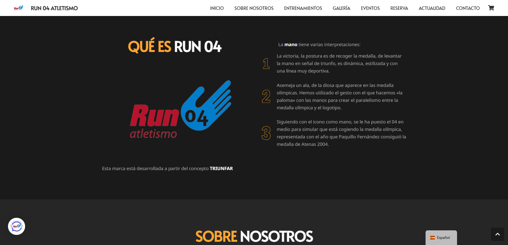
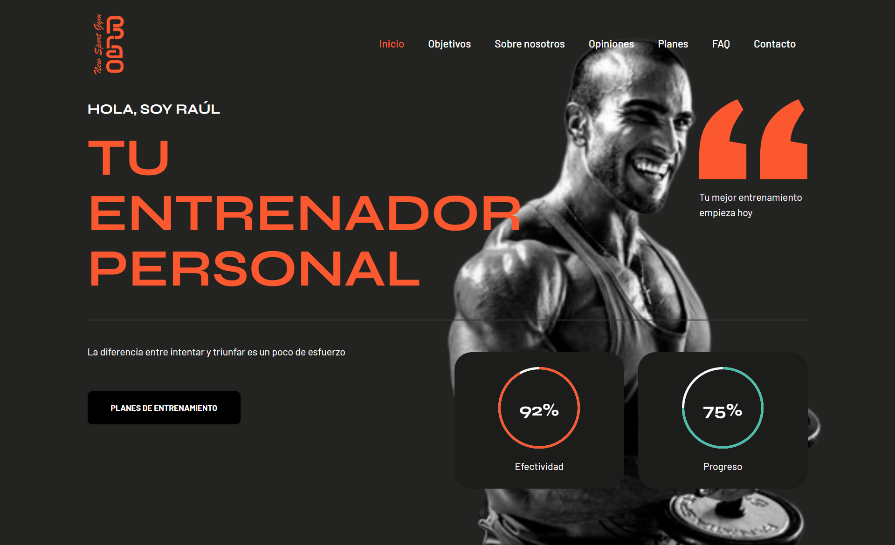
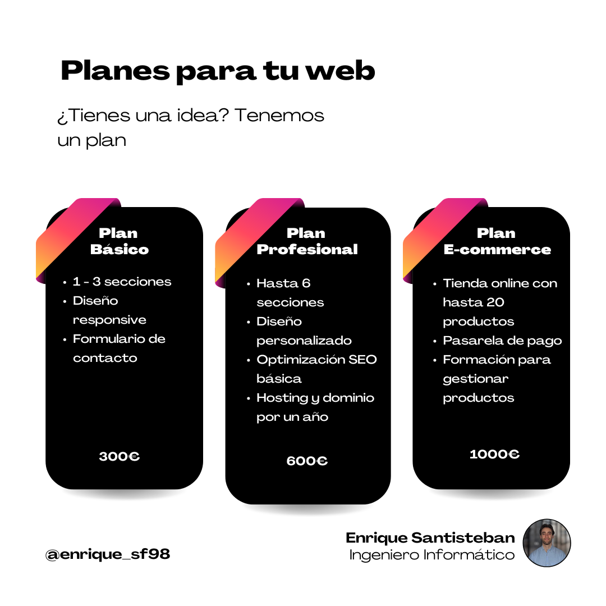

Sobre mí
Soy Enrique Santisteban, ingeniero informático graduado por la Universidad de Almería en la especialidad de Sistemas de la Información.
He desarrollado diversos proyectos y páginas web que combinan funcionalidad, seguridad y diseño atractivo,
adaptados a las necesidades de cada cliente o empresa.
Me apasiona crear soluciones digitales seguras, eficientes y visualmente impactantes que ayuden a organizaciones y profesionales
a destacar en un entorno cada vez más competitivo.
He completado formación en ciberseguridad, inlcuyendo un dipoloma en Ciberseguridad Avanzada en Entornos de las Tecnologías de la
Operación, el certificado Introduction to Cybersecurity de CISCO, y el curso Testing Seguro: Calidad de Software con
Enfoque en Ciberseguridad, lo que refuerza mi capacidad para integrar la seguridad y la calidad del software de forma
proactiva en cada proyecto.
Siempre busco aprender y aplicar nuevas tecnologías para ofrecer el máximo valor en cada proyecto.
Puedes consultar mi CV completo aquí: Ver mi CV
Habilidades técnicas
- HTML, CSS, JavaScript
- SQL (MySQL, Oracle), MongoDB
- WordPress
- Windows y Linux
- Redes y mantenimiento hardware
- SEO y accesibilidad web
- Administración de usuarios y roles
|
Habilidades profesionales
- Resolución de problemas
- Trabajo en equipo
- Soporte técnico presencial y remoto
- Documentación técnica
- Organización
- Atención al cliente
- Adaptabilidad
|
Trabajo

En 2024, el Club Run 04 Atletismo me encargó la creación de su página web oficial run04.com. El reto era transmitir la identidad del club —fundado por el medallista olímpico Paquillo Fernández— y conectar con su comunidad de corredores.
Mi trabajo incluyó:
- Diseño y maquetación web con estilo dinámico y deportivo.
- Desarrollo responsive para móviles, tablets y ordenadores.
- Integración de información del club y calendario de entrenamientos.
- Sección para análisis de pisada y servicios especializados.
- Optimización de rendimiento y SEO.
El resultado fue una web clara, atractiva y funcional que refuerza la imagen del club y facilita la comunicación con sus miembros y nuevos corredores.

Encargo de Raúl, entrenador personal del Club Deportivo Brao. Me pidió la creación de la página web oficial (cdbrao.com) para ofrecer sus servicios como entrenador personal.
El proyecto incluyó:
- Diseño y maquetación web: interfaz limpia, moderna y adaptada a dispositivos móviles.
- Estructuración de contenidos: presentación clara de horarios, servicios y contacto.
- Integración de información del club y calendario de entrenamientos.
- Optimización SEO: para mejorar la visibilidad en motores de búsqueda.
- Integración de formularios de contacto: facilitando la comunicación con los usuarios.
El resultado es una web que refuerza la identidad del club y mejora la experiencia digital de los usuarios.
Planes

En mis planes de desarrollo web encontrarás la solución perfecta para llevar tu idea a internet.
Desde opciones básicas para tener presencia online hasta planes completos de e-commerce, diseñados para que tu negocio crezca y llegue a más clientes.
El Plan Básico es ideal para proyectos pequeños o páginas de presentación.
El Plan Profesional ofrece un diseño más personalizado, mayor número de secciones, optimización SEO y dominio incluido por un año.
El Plan E-commerce está pensado para emprendedores que quieren vender online, con tienda integrada, pasarela de pago y formación para que gestiones tus productos fácilmente..
Tú eliges el plan que mejor se adapta a tus necesidades, y me encargaré de hacerlo realidad. 🚀
Contacto